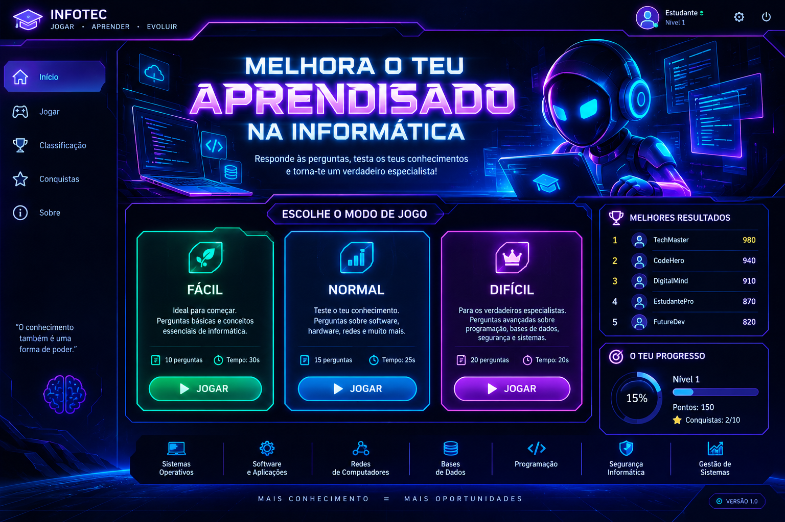

Fácil
Fundamentos de informática.

Escolhe um nível para começares a tua missão.
Fundamentos de informática.
Aplicações, redes e sistemas.
Excel, programação e gestão.
Os teus melhores resultados guardados neste dispositivo.
Continua a praticar para desbloquear medalhas.
Conclui o teu primeiro jogo.
🔒 Ainda bloqueadaAcerta pelo menos 8 respostas num jogo.
🔒 Ainda bloqueadaConclui um desafio difícil.
🔒 Ainda bloqueadaMelhora o teu aprendizado na informática.
O INFOTEC é um jogo educativo para aprender conceitos de informática, tecnologia e informática de gestão através de perguntas de escolha múltipla.
Como jogar: escolhe um nível, lê a pergunta e seleciona a resposta que consideras correta antes de o tempo terminar. Cada resposta correta dá pontos. No fim, vê a tua pontuação e tenta superar o teu recorde.
Privacidade: nesta versão, as pontuações ficam guardadas apenas no navegador deste dispositivo. A classificação não é partilhada pela internet.
Nota escolar: as perguntas são para treino e estudo. Confirma os conteúdos com os apontamentos e materiais indicados pelo teu professor.